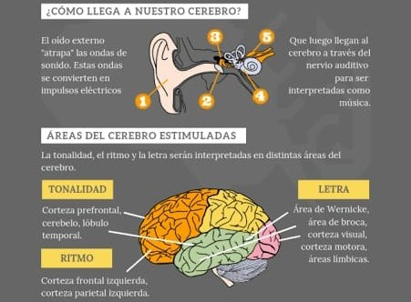
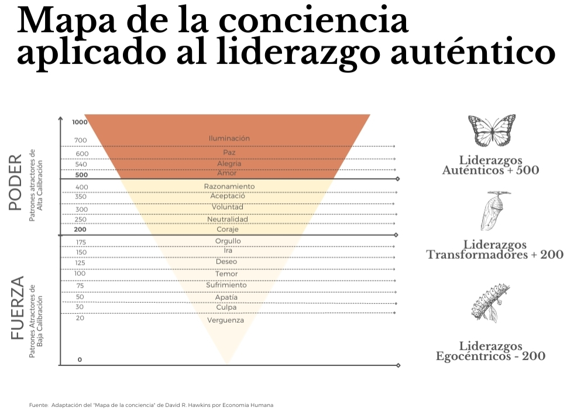
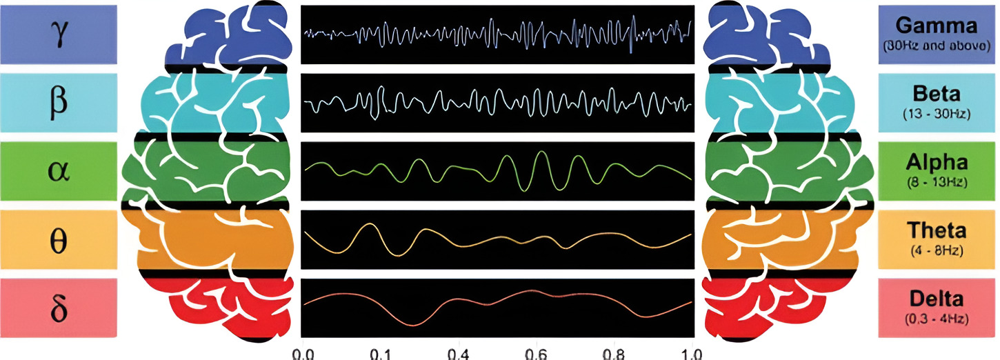

BrainSound: El Impacto de las Ondas Musicales
Descubre cómo la música transforma tu mente, emociones y salud.
🎶Introducción
La música ha acompañado al ser humano desde tiempos ancestrales, no solo como forma de arte o entretenimiento, sino también como una herramienta poderosa de conexión emocional y transformación interior. Gracias a la neurociencia, hoy sabemos que las ondas musicales —vibraciones organizadas percibidas como sonido— influyen de manera real y medible en el cerebro. Este proyecto propone una alternativa tecnológica innovadora para abordar problemáticas cada vez más frecuentes en estudiantes de secundaria, como la ansiedad, el estrés y la falta de concentración. A través del uso de ondas musicales y frecuencias específicas, se busca ofrecer una estrategia accesible, no invasiva y con sustento científico, orientada a favorecer la regulación emocional, mejorar la atención y potenciar la motivación académica, contribuyendo así al bienestar personal y al desarrollo integral de los adolescentes en un entorno educativo equilibrado y saludable.
🔬¿Qué Son las Ondas Musicales?
Las ondas musicales son vibraciones acústicas que viajan a través del aire (o cualquier medio físico) y que son captadas por nuestro oído. Estas vibraciones tienen propiedades específicas como frecuencia, amplitud y forma de onda, que determinan cómo las percibimos:
- Frecuencia (Hz): Define el tono. Frecuencias bajas suenan graves, altas suenan agudas.
- Amplitud (dB): Se relaciona con la intensidad o volumen.
- Forma de onda: Afecta el timbre, o “color” del sonido.
🧠¿Cómo Procesa el Cerebro la Música?
- Corteza Auditiva: Procesa el tono, ritmo, melodía y armonía. Se encarga de descomponer los sonidos complejos y reconocer patrones musicales.
- Sistema Límbico: Incluye estructuras como la amígdala y el hipocampo, responsables de la emoción y la memoria. Explica por qué ciertas canciones pueden hacernos llorar, reír o recordar momentos específicos.
- Corteza Prefrontal: Relacionada con la planificación, la toma de decisiones y la creatividad. Escuchar o componer música activa esta región, especialmente en músicos.
- Cerebelo y Corteza Motora: Se encargan del ritmo y la coordinación. Por eso el cuerpo tiende a moverse con la música, como al bailar o marcar el ritmo.

🧘♂️Escala de Vibración de las Emociones y el Cerebro
La música no solo se percibe, sino que también modula nuestras emociones y estados internos. Según David R. Hawkins, las emociones tienen diferentes niveles de vibración, medidos en una escala de 0 a 1000, donde las emociones bajas como la vergüenza o la culpa generan estados limitantes, mientras que emociones elevadas como la alegría, la paz o la iluminación promueven crecimiento, claridad y bienestar. Escuchar frecuencias específicas puede ayudarnos a elevar nuestro nivel vibratorio, favoreciendo una mente más positiva y enfocada.

🧠Mis Ayudantes Internos
- S.A.R.A. (Sistema Activador Reticular Ascendente): Esta red neuronal en el tronco cerebral regula nuestra atención y alerta. La música con ritmos y frecuencias precisas activa el S.A.R.A., ayudando a mejorar la concentración y el enfoque, especialmente en adolescentes que enfrentan estrés o distracciones constantes.
- Hipocampo: Parte clave del sistema límbico, el hipocampo se encarga de la memoria y la regulación emocional. Escuchar música estimula esta área, reforzando el aprendizaje y generando recuerdos positivos asociados a emociones agradables.
- Médula cerebral:Además de coordinar movimientos y funciones vitales, la médula transmite señales que permiten que las vibraciones sonoras afecten el cuerpo, generando relajación física y reducción de estrés.
🌟Integrando Música y Bienestar
Al combinar la escala de Hawkins con la activación de estructuras cerebrales como el S.A.R.A., hipocampo y médula, BrainSound propone un enfoque integral: no solo escuchas música, sino que tu cuerpo y mente responden a vibraciones que elevan tu energía emocional, mejoran la concentración y fortalecen tu aprendizaje. Así, cada nota se convierte en una herramienta de crecimiento personal y posible equilibrio mental.🎵Ondas Cerebrales y Música: Una Conexión Directa
| Tipo de Onda | Frecuencia (Hz) | Estado Mental Asociado |
|---|---|---|
| Delta | 0.3 – 4 Hz | Sueño profundo, regeneración |
| Theta | 4 – 8 Hz | Meditación profunda, sueños lúcidos |
| Alfa | 8 – 13 Hz | Relajación, flujo creativo |
| Beta | 13 – 30 Hz | Alerta, concentración |
| Gamma | +30 Hz | Procesos cognitivos complejos, insight |

🎧 Escucha las Ondas Cerebrales
Sueño Profundo (Delta)
Tipo de onda: Delta
Frecuencia: 0.5 – 4 Hz
Estado mental: Regeneración, sueño profundo
Meditación Interna (Theta)
Tipo de onda: Theta
Frecuencia: 4 – 8 Hz
Estado mental: Meditación profunda, intuición
Flujo Creativo (Alfa)
Tipo de onda: Alfa
Frecuencia: 8 – 14 Hz
Estado mental: Relajación, inspiración
Concentración Activa (Beta)
Tipo de onda: Beta
Frecuencia: 14 – 30 Hz
Estado mental: Enfoque, productividad
Alta Cognición (Gamma)
Tipo de onda: Gamma
Frecuencia: +30 Hz
Estado mental: Aprendizaje, conciencia plena
🎶Nuestra Playlist en Spotify
Descubre los ritmos y frecuencias que transformarán tu día: relájate con ondas Delta, inspírate con Alfa, enfócate con Beta, adéntrate en la meditación Theta o potencia tu mente con Gamma. ¡Elige la frecuencia que necesitas y deja que BrainSond te acompañe!
▶️ Ver en Spotify📌Música y Modulación de Ondas Cerebrales
- Música binaural: Usa dos frecuencias ligeramente diferentes en cada oído para inducir estados mentales específicos.
- Sonoterapia: Aplica frecuencias concretas para tratar ansiedad, trastornos del sueño, TDAH, entre otros.
- Terapias vibroacústicas: Usan altavoces de baja frecuencia aplicados al cuerpo para generar bienestar físico y mental.
❤️Beneficios Psicológicos y Cognitivos de la Música
- Mejora del Estado de Ánimo: Aumenta la dopamina (neurotransmisor del placer), libera oxitocina (empatía) y serotonina (bienestar general).
- Reducción del Estrés y la Ansiedad: La música con tempos lentos y sonidos suaves puede disminuir los niveles de cortisol, la hormona del estrés, y promover la relajación profunda.
- Estimulación de la Memoria: La música estimula el hipocampo, por lo que se utiliza en terapias para personas con Alzheimer o pérdida de memoria. También favorece el aprendizaje cuando se escucha música instrumental.
- Incremento de la Productividad: Ciertas músicas (especialmente sin letra y con ritmos constantes) ayudan a mantener la atención y mejorar el rendimiento en el estudio o trabajo.
🎓Aplicaciones de la Música en la Ciencia y la Salud
Terapias Musicales
- Musicoterapia: Empleada para tratar depresión, ansiedad, autismo, adicciones, y más.
- Neurorehabilitación musical: Usada en rehabilitación post-accidente cerebrovascular o Parkinson.
- Rehabilitación motora: El ritmo musical mejora la coordinación y la movilidad en terapias físicas.
Educación y Aprendizaje
- La música favorece el aprendizaje de idiomas, el pensamiento lógico y el desarrollo emocional en niños.
- Tocar un instrumento desarrolla habilidades motoras y cognitivas, mejorando la plasticidad cerebral.
🧏♂️¿Cómo Perciben la Música las Personas Sordas?
- 🔊Vibraciones Sonoras: Sienten las ondas a través del suelo, altavoces, o superficies vibrantes. Usan dispositivos hápticos como chalecos, cinturones o mochilas que convierten el sonido en vibración.
- 👁Estímulo Visual: Luces sincronizadas al ritmo musical. Representaciones visuales de las ondas de sonido en colores o formas. Intérpretes de lengua de señas que traducen la música en tiempo real con expresión corporal.
- 💃Movimiento y Coreografía: Perciben el ritmo corporalmente a través del baile. Se sincronizan con la música mediante señales visuales, memoria muscular y práctica.
- 🎧Tecnología e Innovación: SubPac: mochila vibratoria para sentir música en el torso y espalda. Trajes hápticos: distribuyen la música como vibración en todo el cuerpo. Proyectos como “Feel the Music” acercan la música clásica a jóvenes sordos mediante tecnología.
🌈La Música Como Experiencia Multisensorial
La música es mucho más que sonido: es vibración, emoción, energía, movimiento. Las personas sordas no oyen la música, pero sí la sienten, la viven y la interpretan. Su forma de experimentarla demuestra que la música es un lenguaje universal accesible desde múltiples sentidos.
🌌El Futuro: Música, Tecnología y Conciencia
- Apps que ajustan la música al estado emocional.
- Juegos de meditación musical en VR.
- Algoritmos que crean música adaptada a ondas cerebrales en tiempo real.
Estas herramientas prometen revolucionar no solo cómo escuchamos música, sino cómo usamos el sonido como medicina para el cuerpo y la mente.
📖Conclusión
Diversos estudios realizados en varios países respaldan los beneficios de la musicoterapia y las ondas musicales en adolescentes. En China, se demostró que la musicoterapia reduce ansiedad y depresión en estudiantes y favorece la interacción social y la expresión emocional en niños, adolecentes y tambien con habilidades especiales; en Estados Unidos, sistemas basados en electroencefalogramas permiten ajustar la música según las respuestas emocionales de cada usuario; y en Perú, la musicoterapia disminuye el estrés académico en jóvenes. Estos hallazgos respaldan la propuesta de BrainSound, que busca integrar la música y la tecnología para ofrecer una estrategia accesible, científica y efectiva que potencie la concentración, regule las emociones y promueva el bienestar integral de los estudiantes, contribuyendo a un desarrollo más equilibrado y saludable en su etapa educativa y personal.
📱Prueba nuestra App BrainTrack en versión Beta
Descarga la APK y sé parte del desarrollo: explora funciones exclusivas para monitorizar tus ondas cerebrales y ayúdanos con tu feedback.
▼ Descargar BrainTrack Beta (APK)